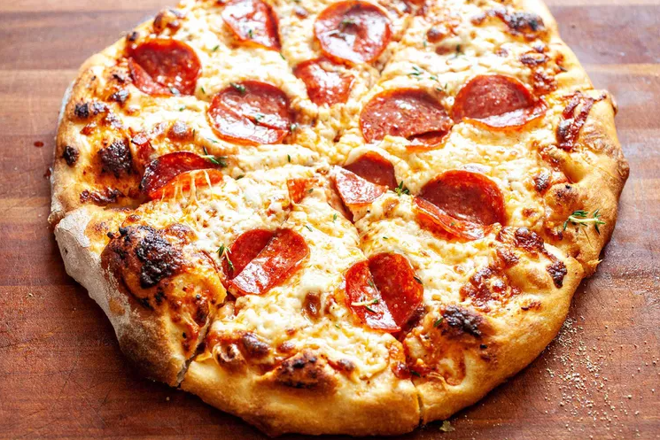

A recipe for delicious homemade pepperoni pizza.
Ingredients
- 16 ounces pizza dough (store-bought or homemade)
- 1/2 cup pizza sauce (see below)
- 18 to 20 slice pepperoni
- 12 ounces mozzarella cheese, grated
- 1/2 teaspoon ground black pepper
- 1 teaspoon fresh oregano, optional
- Flour for rolling and shaping dough
For the Quick Pizza Sauce
- 1/2 cup tomato sauce (no salt)
- 1/2 teaspoon kosher salt
- 1/2 teaspoon ground black pepper
- 1/2 teaspoon grandulated garlic
- 1/2 teaspoon granulated onion
- 1/4 teaspoon red pepper flakes
- 1 teaspoon olive oil
For the Honey Butter
- 1/4 cup softened butter
- 2 tablespoons honey
Instructions
- Preheat the oven to 500 degrees F:
If you are using a pizza stone, preheat it in the oven for at least 20 minutes so it is nice and hot as well.
- Make the sauce:
If you are using my sauce recipe, stir together the ingredients. The sauce recipe makes just enough for one large pizza. You can easily double it if you are making more than one pizza.
- Roll out the dough:
Roll out dough on a lightly floured surface. If it's hard to roll, let it rest for 5 minutes so it can come to room temperature. For a large pizza, I like to roll my dough into about a 14-inch diameter circle.
- Add the topping:
Transfer the dough to a lightly dusted pizza peel. Alternatively, fit it into a large cast-iron. Add sauce in a light layer all over the pizza, leaving about 1/4-inch crust around the edges. Chop half of the pepperoni and sprinkle it over the sauce. Top the pizza with grated cheese and the rest of the pepperoni. Season with black pepper.
- Cook the pizza:
If you're using a pizza stone, carefully slide pizza into the center of the preheated pizza stone. Cook for 6 minutes, then rotate the pizza halfway so it cooks evenly. Cook for another 6 to 8 minutes, or until the crust is golden brown and charred in spots. If you're using a skillet, press the dough into a cast iron skillet and add toppings. Place the skillet over a high heat burner for 2 minutes to get it preheated and get the crust cooking right away. Then transfer to a 500 °F oven and bake for 10 to 12 minutes, or until the crust is golden brown.
- Slice and serve:
Use pizza peel to slide pizza out onto a cutting board. Let the pizza rest for a minute and slice into pieces. Season with fresh oregano (optional). Serve while warm with a side salad.
- Make the honey butter (optional):
Stir together the softened butter and honey, then serve alongside the pizza for crust dipping.